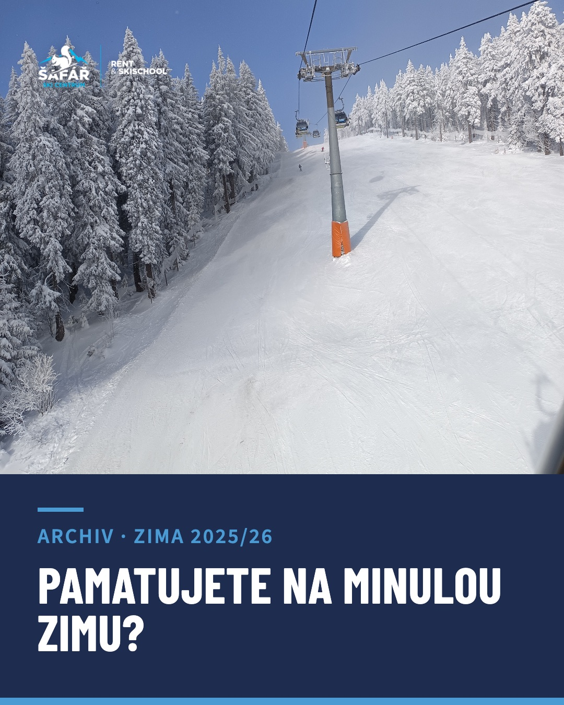
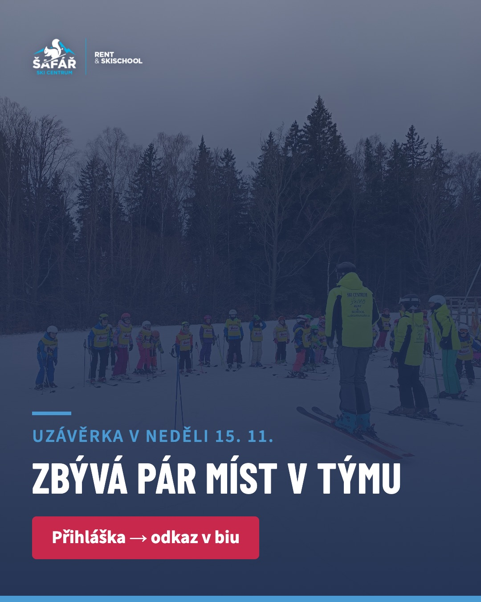

Jedno místo, kde je vidět, co se kdy publikuje, proč, jak to má vypadat a jaký text k tomu patří. Používá ji každý, kdo na sezóně dělá — majitel, instruktoři, grafik i ten, kdo příspěvek nakonec odesílá. Není to zadání pro jednoho člověka, je to plán.
Na Google Disku ve složce Ski Šafář — Podklady pro sítě. Je rozdělená na 00 (logo, barvy, schválené fotky) a A–D podle fází sezóny. Hotová grafika se nahrává do složky té fáze, ke které patří.
Grafika se dělá po měsíčních dávkách, ne po jednom příspěvku. Listopad (posty 01–08): hotovo do neděle 1. 11. Po posunu o týden: prosinec se zadává 1. 12., leden 27. 12.
Ne lajky. Přihlášky instruktorů, rezervace a dotazy ve zprávách. Čísla se měří dvakrát do měsíce, vyhodnocení přijde vždy na začátku toho následujícího.
Každá fáze má jiný úkol. Obsah, který by v lednu fungoval, v listopadu propadne — a naopak.
| Fáze | Období | Co má obsah dokázat | Čím to děláme |
|---|---|---|---|
| A Před sezónou | listopad – prosinec | Sehnat instruktory, rozhýbat sítě před otevřením, prodat dárkové poukazy. | Archiv minulé zimy, přípravy, nábor |
| B Začátek sezóny | prosinec – leden | Odpovědět na to, co rodiče brzdí před první rezervací. Ukázat lidi. | Videoodpovědi, představení týmu |
| C Hlavní sezóna | leden – polovina března | Dokázat, že se u nás děti něco naučí. Zaplnit slabé dny a jarní prázdniny. | Pokrok, denní stories ze svahu |
| D Konec sezóny | březen – duben | Posbírat reference a materiál na příští rok. | Závod, poděkování, vyhodnocení |
Nic víc. Konzistence je cennější než pestrost — tři témata se dají udržet celou sezónu i při plném provozu.
Důkaz, že se dítě něco naučí. Nejsilnější argument, který škola má, a nikdo z konkurence ho neukazuje. Naplno běží od ledna.
Instruktoři jako konkrétní lidé, ne anonymní žluté vesty. Rodič svěřuje dítě člověku, ne firmě.
Co se rodiče ptají na telefonu, to se ptají i ostatní. Každá odpověď je jedno krátké video — natočí ji Šáfa nebo instruktor na telefon.
V listopadu ještě nemáme ani klienty, ani tým. Proto se do té doby používají dvě přechodná témata — Archiv (minulá zima) a Přípravy (co se děje před otevřením) — plus Kampaň na nábor a poukazy. Od prosince přebírají vládu tři pilíře výše.
Oranžová se nepoužívá.
Nadpisy: úzký bezpatkový řez (Barlow Condensed nebo podobný). Text: běžný bezpatkový (Source Sans 3).
Tón: krátké věty, konkrétní čísla, žádné superlativy. Nepíšeme „zažijte kouzlo zimy“, píšeme „učíme od tří let, ve skupině je maximálně šest dětí“.
Hlavní myšlenka školy: lyžařská škola a půjčovna s radostí a láskou. Rodinná, ne výkonnostní.
Víc jich není potřeba. Každý příspěvek v plánu má u sebe napsáno, která se použije.

3–5 snímků. První nese celý nadpis, další jsou fotky s jednou větou dole. Poslední snímek vždy výzva k akci. Formát 1080×1350.
Svislé video 1080×1920, 20–40 sekund. Otázka velkým písmem první dvě vteřiny, pak mluví člověk. Vždy titulky — většina lidí to má bez zvuku.

Jedna fotka, jedno sdělení, nic víc. Na oznámení a připomínky. Text drží maximálně osm slov. Formát 1080×1350.
Pět fotek z minulé sezóny, které prošly kontrolou na rozpoznatelné obličeje. Leží ve složce 00 → Fotky — schválené k použití. U každého příspěvku níže je napsáno, která se k němu hodí — je to výchozí bod, ne závazek. Lepší záběr z archivu, který pravidlo o obličejích splňuje, má přednost.
| Soubor | Co je na ní | Hodí se na |
|---|---|---|
| 01_lanovka-zasnezeny-les_modra-obloha.jpg | Pohled z lanovky, zasněžené smrky, čerstvě upravená sjezdovka, modrá obloha. Nikdo na ní není. | Úvodní snímky, oznámení, pozadí pod text |
| 02_sjezdovka-chata_slunecno_instruktor-z-dalky.jpg | Slunečná sjezdovka s horskou chatou, instruktor ve žluté bundě z velké dálky. | Archiv, „takhle to u nás vypadá“ |
| 03_skupina-zezadu_mlha_lyze-v-popredi.jpg | Skupina dětí zezadu v mlze, v popředí odložené lyže a hole. | Přípravy, atmosféra, servis vybavení |
| 04_snezeni_detska-skupina-z-dalky.jpg | Husté sněžení, řada dětí v odstupu, instruktoři ve žlutém. | Školní kurzy, skupinová výuka |
| 06_chata-viktorka_zima_vyrez-bez-rollupu.jpg | Chata Viktorka v zimě, rampouchy, zasněžený smrk. Oříznutá bez rollupu s dítětem. | Viktorka, půjčovna, Janské Lázně |
| 05_instruktor-zezadu_rada-deti_les.jpg | Instruktor zády ke kameře před nastoupenou řadou dětí, les v pozadí. | Nábor instruktorů, „co tě čeká“ |
Pokud jedna fotka vyjde na víc příspěvků, je to v pořádku — řeší se jiným ořezem, jiným detailem a jiným textem. Lepší opakovaná bezpečná fotka než nová s obličejem.
Posty 01–08 jsou hotové ve dvou formátech: feed 1080×1350 (Instagram a Facebook) a story 1080×1920. Náhledy jsou přímo u každého příspěvku níže, kliknutím se otevřou v plné velikosti. Texty příspěvků se nezměnily.
Sedmnáct příspěvků od listopadu do začátku ledna. U každého je šablona, doporučená fotka, co na ní má být vidět, proč tam ten příspěvek je a hotový text ke zkopírování.